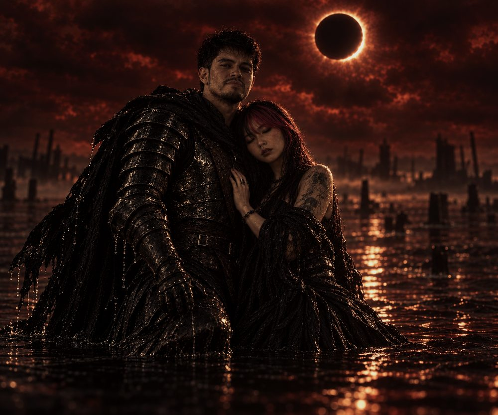

Join us for the wedding of
Marc-Kevin & Florence
October 06, 2026
a Tuesday
Five o'clock in the evening
The two of us
Under a black sun

Somewhere between the eclipse and the reception, there are two people who just like the same things.


Before the day
The prenup

We are not, in real life, at war. We did want one photograph where it looks like we might be.


The reception will be at
Smoque Bistro

The ceremony venue isn't on the invitation yet — send it over and it will sit right here, with its own map link.
What to wear
Black and burgundy
We kindly ask that you wear the below colour tones for our special day.

Anything in those two families works — a deep wine, a merlot, an oxblood. The evening is indoors, and it will be warm.
Order of the day
How the evening runs
Guests arrive
Come half an hour before the ceremony so nobody is seated in a hurry.
Ceremony
Five o'clock in the evening, as printed on the invitation.
Drinks and photographs
At Smoque Bistro.
Dinner and speeches
Seated or buffet — say which, and guests will know what to expect.
First dance
And whatever follows it.
Last song
How guests are getting home.
Getting there and staying
Travel and rooms
Finding Smoque Bistro
On Carlos P. Garcia East Avenue in the Bool district of Tagbilaran City, beside the ACE Medical building. If a driver does not know the name, the hospital is the landmark that works.
Parking
How much parking there is, and whether cars can be left overnight.
Flying in
Bohol–Panglao International Airport (TAG) is about 15 km away, roughly half an hour by road. Grab works on the island, and metered taxis run about ₱400–600 into the city.
Coming by sea
OceanJet sails Cebu City Pier 1 to Tagbilaran in about two hours, roughly hourly from early morning to early evening. The pier is in Tagbilaran itself, a short ride from the restaurant.
Somewhere to sleep
Kew Hotel, Ocean Suites Bohol, Travelbee Seaside Inn and 7 Meadows Inn are all in Tagbilaran and close enough to the venue. If you hold a block of rooms anywhere, put the hotel, the booking code and the release date here.
What October is like
Rainy season. Expect around 30°C, heavy humidity, and a good chance of rain at some point in the day. Bring an umbrella, and do not count on the weather for anything that has to happen outdoors.
Kindly reply by date
Are you coming?
Here is your reply
Good to know
The questions we keep getting
- Does the dress code mean head to toe?
- No — black or burgundy as the main tone is plenty. There is no need to match anyone else.
- Can I bring the children?
- While we love the little ones, our reception will be limited to adults.
- Can I bring someone?
- Due to limited space, our celebration is strictly for the named guests on the invitation.
- What about gifts?
- Your presence is the greatest gift of all. Should you wish to honour us with a gift, a contribution to our wishing well would be appreciated.
- Can I take photographs?
- We would love for you to capture memories during the day, but we kindly ask that you refrain from posting any photos on social media. We want to be the first to share our moments, and we would be happy to send you copies afterward if you like.